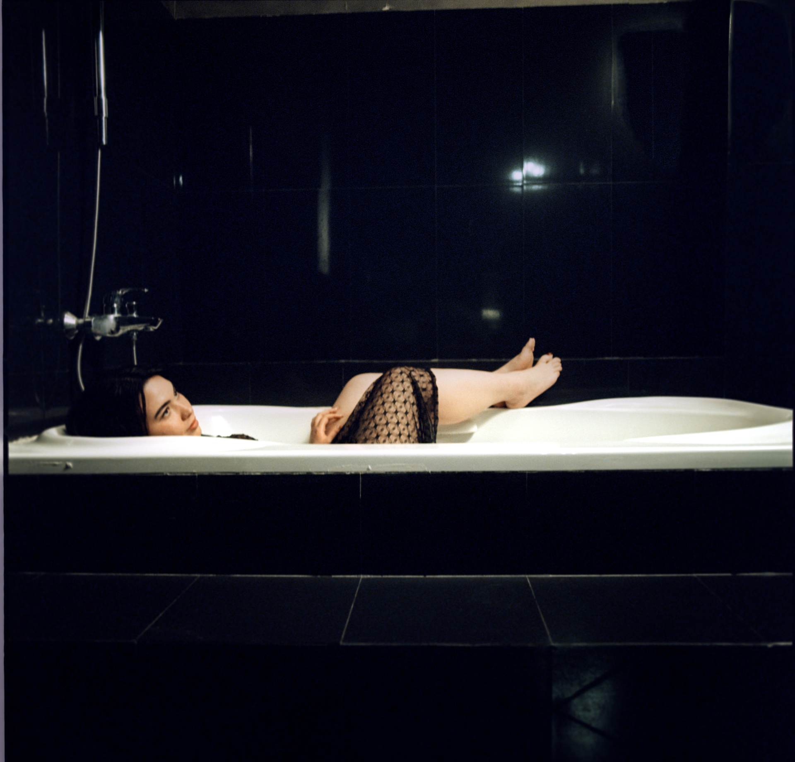
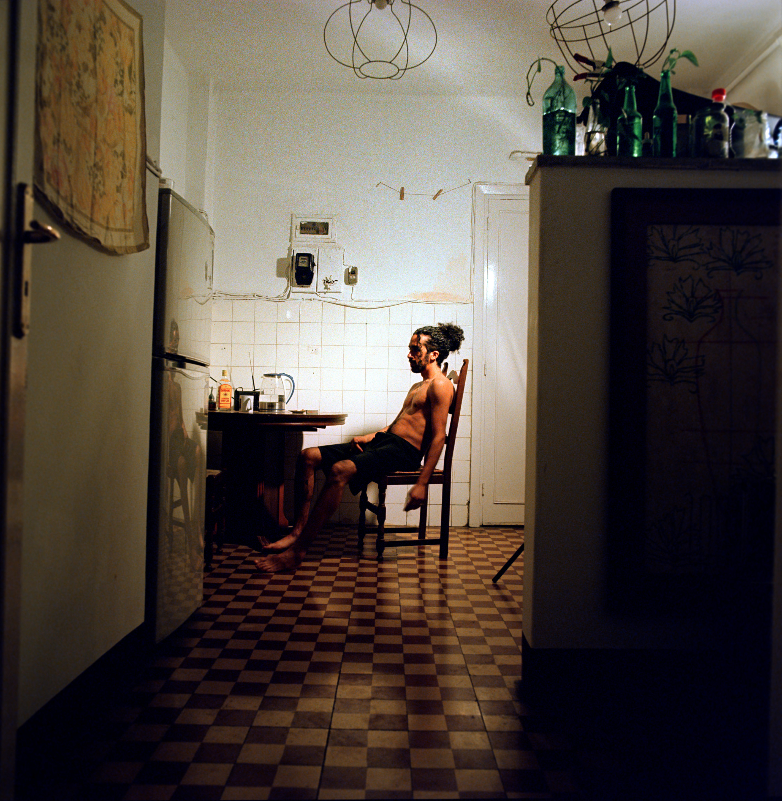
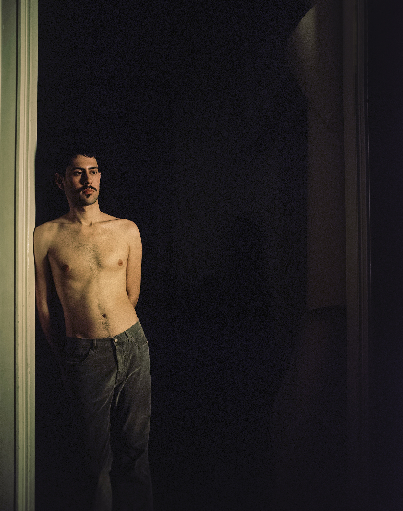

Collaborators
Hannah Taha
Yasmine Fahmy
Mariam Abdallah
Omar Zeftawy
Iman El Deeb
Khaled Khalifa
Nastea Tigai
Lama Ahmed
Anxiety is sleeping. Its breath quivers perpetually beneath the surface, alerting the self to what it represses and ignores; i.e. the old and familiar desires that, through the ego, are transformed into “purer” and more morally and socially acceptable forms. It’s an ache in one’s mind speaking its needs — sometimes in a whisper, sometimes a mumble, sometimes a shriek, but never silent.
Eventually, anxiety manages to give rise to the unconscious and the repressed; providing a moment of direct and unadulterated access to the deepest wells of one’s being; creating a feeling of unsettling ambivalence.
A Moment of Clarity is a set of tableaux of such moments that occur during a heightened time during which the self is radically altered by something that presses on it from the depth of the psyche, challenging the assumptions upon which our reality is based.